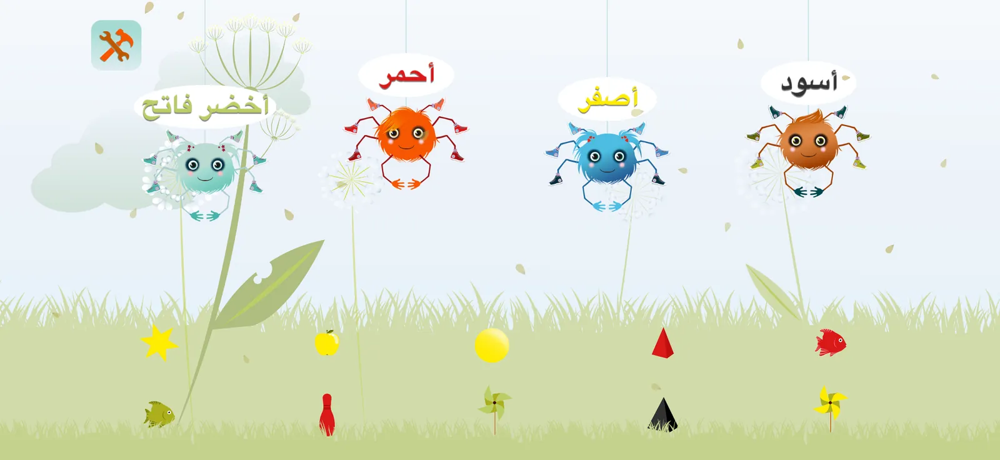
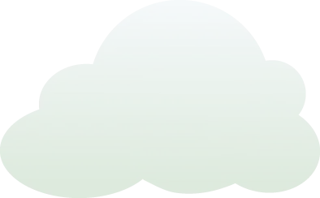
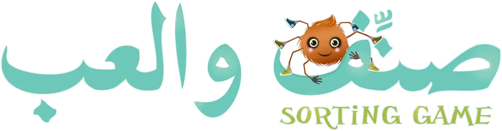
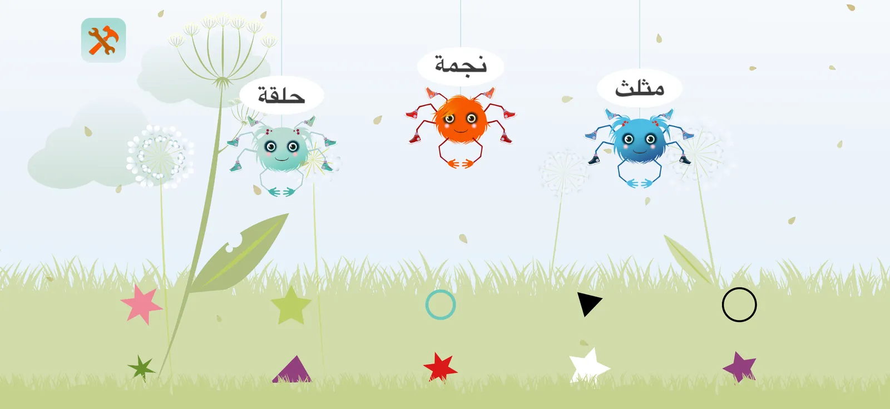
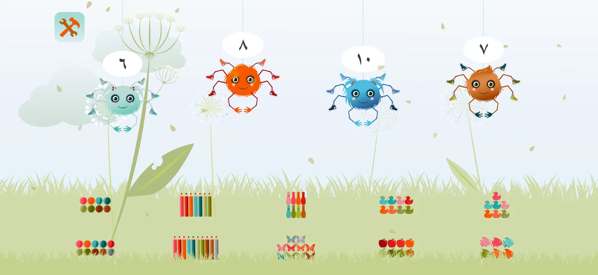
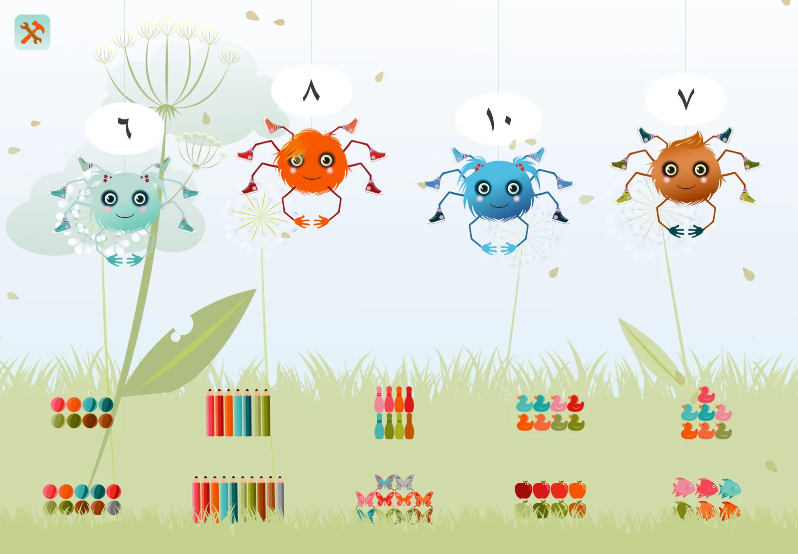
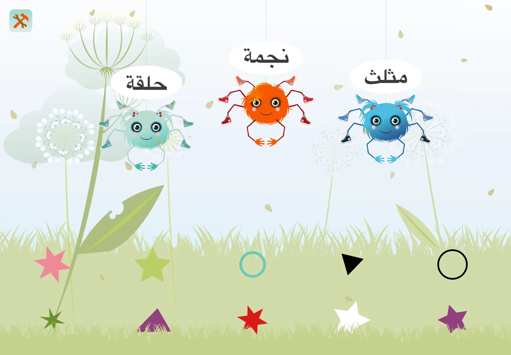

الألوان
أحمر، أصفر، أزرق فاتح… يأخذ كل عنكبوت ما كان بلونه.


لعبة تصنيف لأطفال الثالثة إلى الخامسة. يسحب الطفل الألوان والأشكال والأعداد إلى العناكب التي تنتظرها، ويسمع كل كلمة بالعربية الفصحى.
للآيفون والآيباد والماك
ثلاث ألعاب
في كل جولة تتدلّى العناكب من خيوطها فوق المرج، وفوق كل عنكبوت غيمة صغيرة كُتبت عليها كلمته. وفي العشب عشرة أشياء، لكلٍّ منها عنكبوت ينتظره.

أحمر، أصفر، أزرق فاتح… يأخذ كل عنكبوت ما كان بلونه.

نجمة، مثلث، حلقة، مربع… يأخذ كل عنكبوت ما كان على شكله.

من ١ إلى ١٠: يأخذ كل عنكبوت المجموعة التي فيها عدده من الأشياء.
كيف تُلعب
يسحب الطفل الشيء إلى العنكبوت الذي يناسبه. إن أصاب فرح العنكبوت وسمع الطفل كلمة تشجيع مثل «ممتاز» و«رائع»، وإن أخطأ سمع «مكانه ليس هنا» وعاد الشيء إلى مكانه ليحاول من جديد.
يلمس الطفل العنكبوت أو غيمته فيسمع كلمته متى شاء، فلا يحتاج إلى أن يقرأ.
يلمس الطفل اللعبة في صفحة البداية فتظهر خريطة مستوياتها: من عنكبوت واحد وشيئين إلى أربعة عناكب وعشرة أشياء، ويفتح كل مستوى ينهيه الطفل المستوى التالي، مع نجوم يكسبها.
حين تُصنَّف الأشياء العشرة كلها يحتفل المرج، ثم تبدأ جولة جديدة بكلمات وصور أخرى.
تضيء نجمة مع كل شيء يُصنَّف، وفي آخر كل جولة يربح الطفل صديقًا جديدًا من الحيوانات يسكن ألبومه «مرجي»، وفيه ٤٥ صديقًا. يُفتح الألبوم من الزر في أعلى صفحة البداية.
إن أخطأ الطفل مرتين في الشيء نفسه، أو توقّف عن اللعب قليلًا، يلمع أثرٌ ذهبي من الشيء إلى عنكبوته ويقول العنكبوت كلمته. لا وقت يلاحقه، ولا شيء يخسره.
على كل شاشة
يمتدّ المرج ليملأ الشاشة كلها: الآيفون والآيباد بالوضع الأفقي، وشاشتَي iPhone Duo، ونافذة الماك بأي حجم.


لا إعلانات، ولا مشتريات داخل التطبيق، ولا حسابات، ولا تتبّع. لا يجمع التطبيق أي معلومات عن الطفل، ويرسل إحصاءات لعب مجهولة وتقارير أعطال فقط، وتبقى إعداداته على الجهاز.
منذ ٢٠١٤
صدرت «صنّف والعب» أول مرة عام ٢٠١٤ للآيباد، وتعود اليوم في الإصدار ٢٫٠ مبنيّةً من جديد لأجهزة اليوم، برسومها وأصوات النطق الأصلية، مع ١٢ مستوى في كل لعبة وموسيقى جديدة، ونجومٍ وأصدقاء من الحيوانات تُجمع في ألبوم «مرجي»، ونطقٍ مولَّد آليًّا لاسمَي اللونين «برتقالي» و«أبيض».
In English
A sorting game for children aged 3 to 5. Children drag colors, shapes and numbers to the spiders waiting for them, and hear every word in classical Arabic. The game itself is entirely in Arabic.